Tutorial#
This tutorial will take the reader through an example of using Jupyter notebooks. Jupyter is the interface to the Python programming language used in the first part of this book.
Installation#
The recommended way to install Python on Windows is through the Python Install Manager from python.org.
Navigate to https://www.python.org/downloads/ and click “Download Python install manager”.
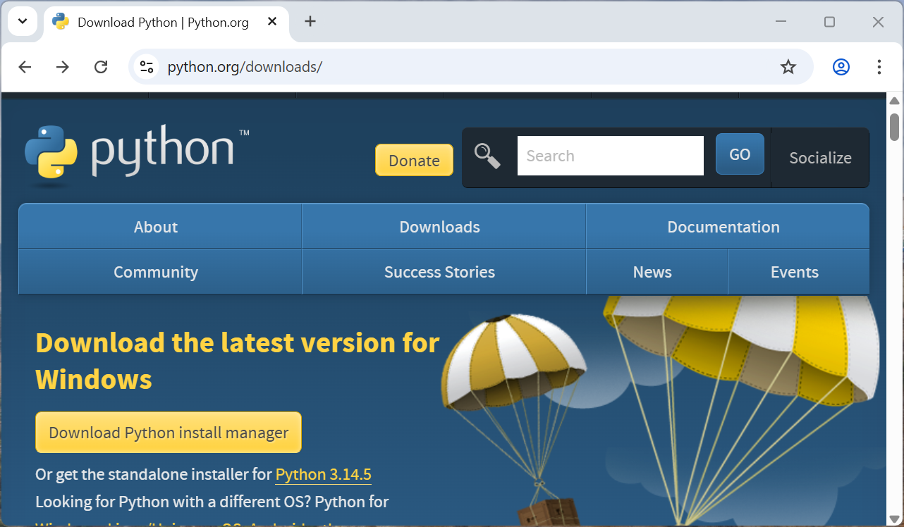
Fig. 2 The python.org downloads page with the Python install manager button.#
Once the download finishes, open the downloaded file. In the dialog that appears, click “Install Python”.
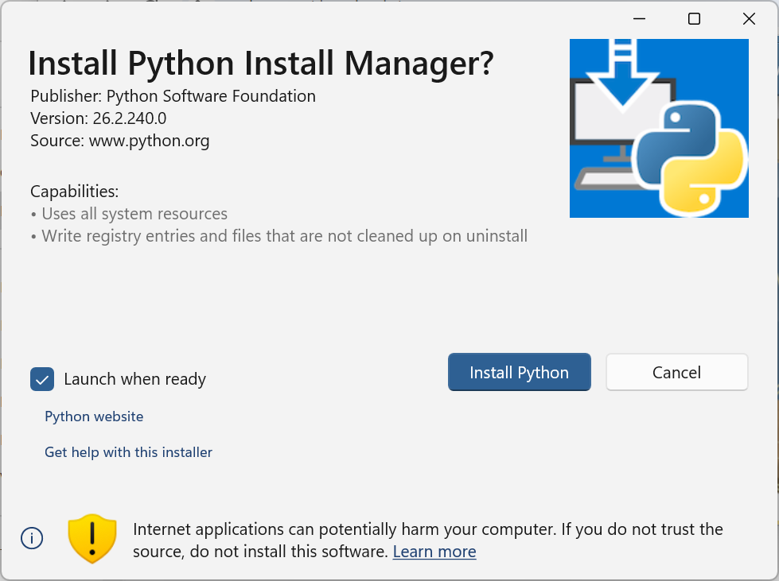
Fig. 3 Confirming the Python Install Manager installation.#
The Python Install Manager opens in your terminal. When asked “Add commands directory to your PATH now?”, type
yand pressEnter.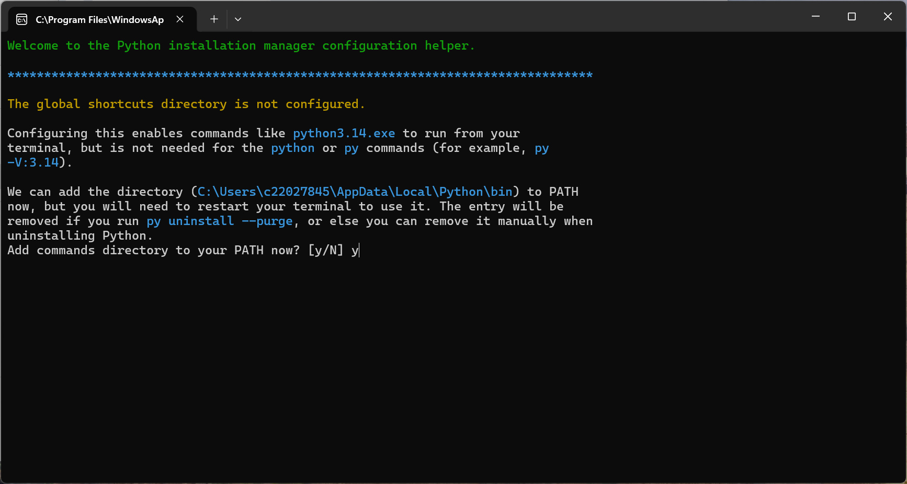
Fig. 4 Adding Python to PATH via the Python Install Manager.#
When asked “Install CPython now?”, type
Yand pressEnterand wait for the installation to complete.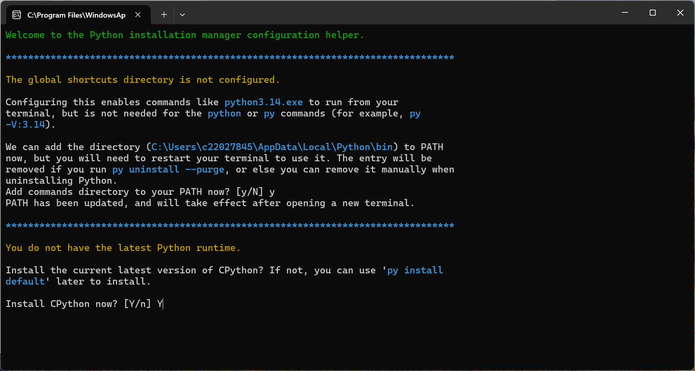
Fig. 5 Installing CPython via the Python Install Manager.#
Open Windows PowerShell from the Start menu (search for “Terminal” or “PowerShell”).
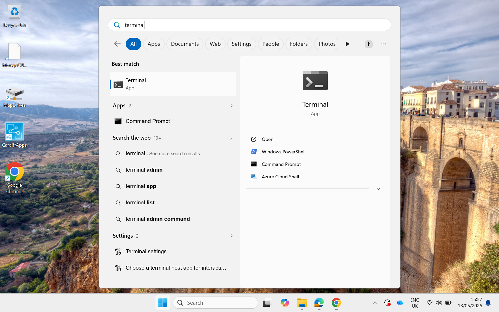
Fig. 6 Opening Windows PowerShell from the Start menu.#
Install the Python libraries needed for this book by typing the following and pressing
Enter:$ python -m pip install jupyter sympy numpy matplotlib scipy
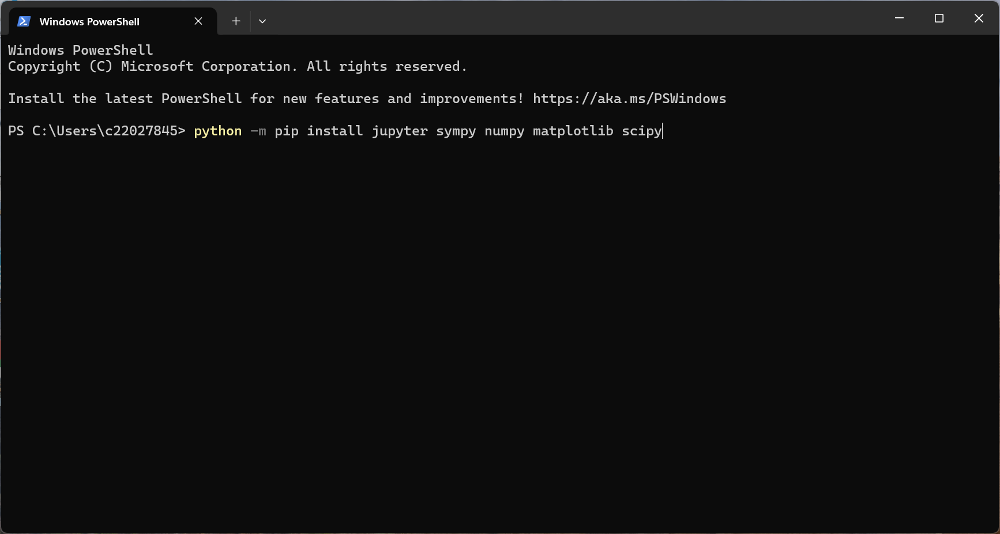
Fig. 7 Installing the required libraries in Windows PowerShell.#
{kind=link}
{kind=link}
{kind=link}
{kind=link}
{kind=link}
{kind=link}
Navigate to https://www.python.org/downloads/ and download the latest Python 3 installer for macOS.
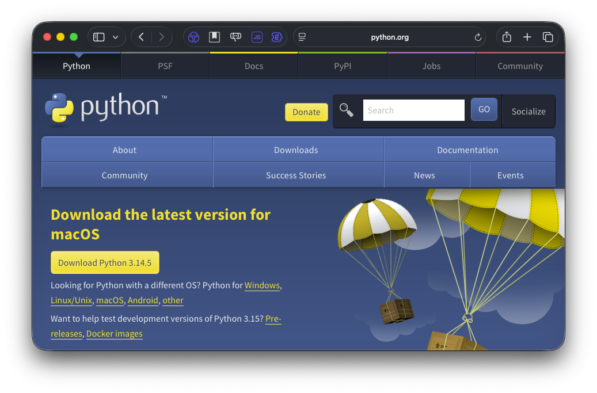
Fig. 8 Downloading Python for macOS from python.org.#
Run the installer and follow the default prompts.
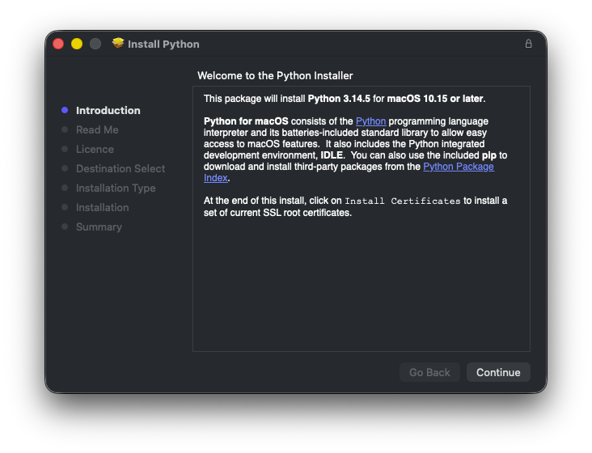
Fig. 9 The Python installer on macOS.#
Open Terminal (press
Cmd + Space, typeTerminal, pressEnter).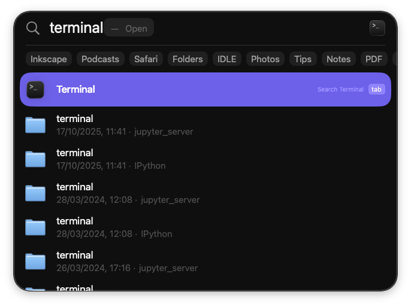
Fig. 10 Opening Terminal on macOS.#
Install the Python libraries needed for this book by typing the following and pressing
Enter:$ python3 -m pip install jupyter sympy numpy matplotlib scipy
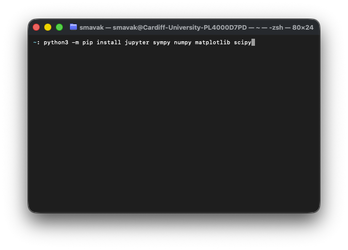
Fig. 11 Installing the required libraries in Terminal on macOS.#
{kind=link}
{kind=link}
{kind=link}
{kind=link}
Google Colab is a free cloud-based Jupyter notebook environment provided by Google. It runs entirely in your browser and requires no local installation — only a Google account.
Navigate to https://colab.research.google.com/ and sign in with your Google account.
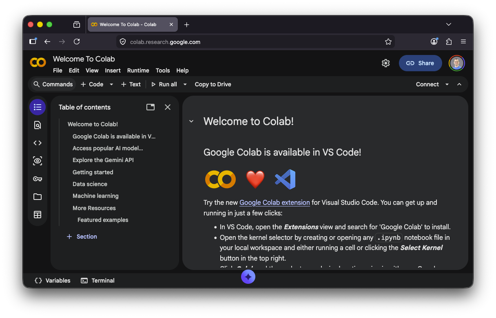
Fig. 12 Signing in to Google Colab.#
Click “New notebook” to create a new notebook.
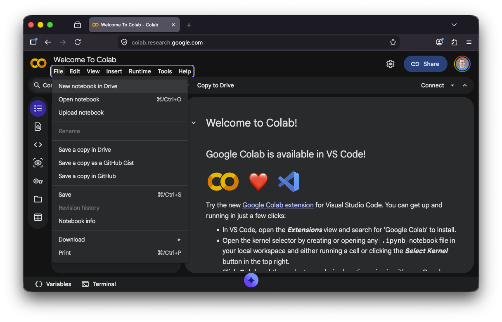
Fig. 13 Creating a new notebook in Google Colab.#
The libraries used in this book (
sympy,numpy,matplotlib,scipy) come pre-installed in Google Colab. You can verify this by running the following in the first cell (pressShift + Enterto run):import sympy import numpy import matplotlib import scipy print("All libraries available.")
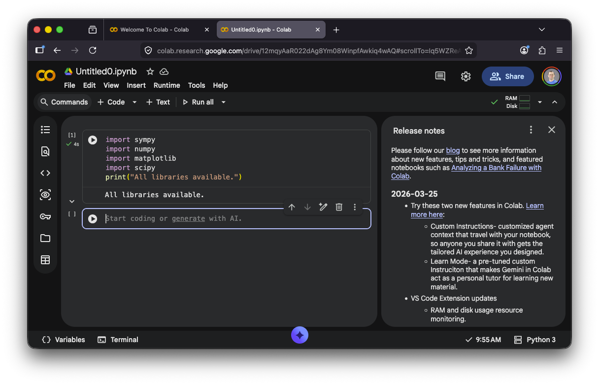
Fig. 14 Verifying the required libraries are available in Google Colab.#
Rename your notebook by clicking on “Untitled0.ipynb” at the top of the page and typing a new name, then press
Enter.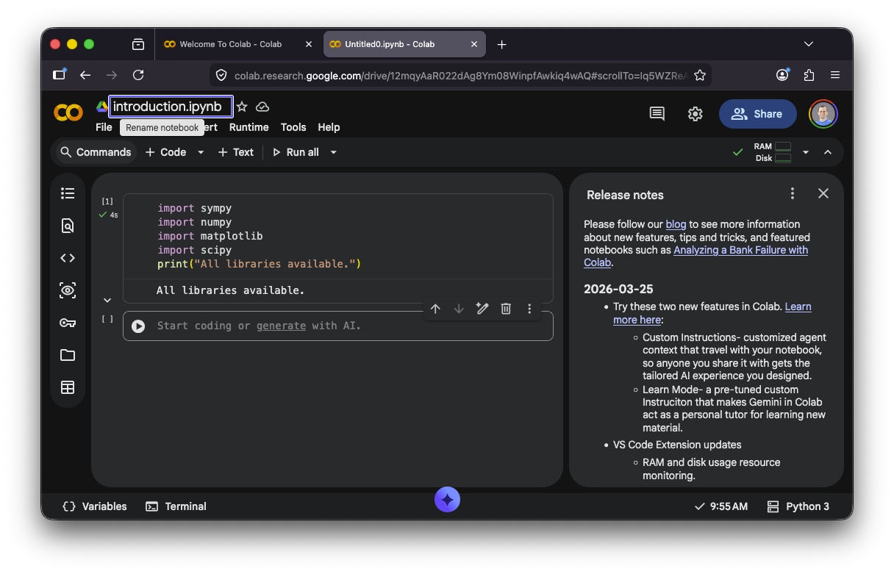
Fig. 15 Renaming a notebook in Google Colab.#
{kind=link}
{kind=link}
{kind=link}
{kind=link}
Your notebook is automatically saved to Google Drive. You can now skip ahead to Writing some basic Python code.
Starting a Jupyter notebook server#
Note
If you are using Google Colab you can skip this section and continue from Writing some basic Python code.
Open Windows PowerShell from the Start menu
(see Opening Windows PowerShell from the Start menu.). In there type (without the $):
$ python -m notebook
Open Terminal (see Opening Terminal on macOS.). In there type
(without the $):
$ python3 -m notebook
Press Enter on your keyboard.
Tip
Throughout this book, when there are commands to be typed in a command
line they will be prefixed with a $. Do not type the $.
This will open a new page in your browser. The url bar at the top should have
something that looks like: http://localhost:8888/tree. This is the
general interface to the Jupyter server. It shows the general file
structure on your computer as shown in The Jupyter interface..
{kind=link}
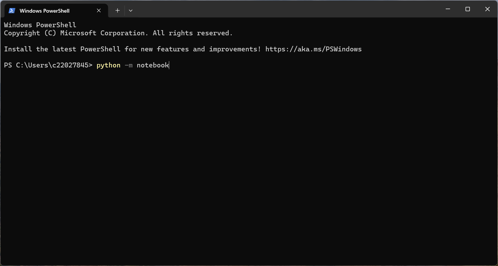
Fig. 16 Starting the notebook server on Windows.#
{kind=link}
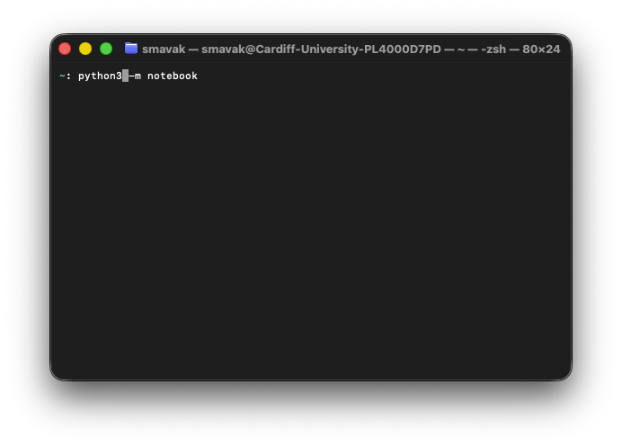
Fig. 17 Starting the notebook server on macOS.#
{kind=link}
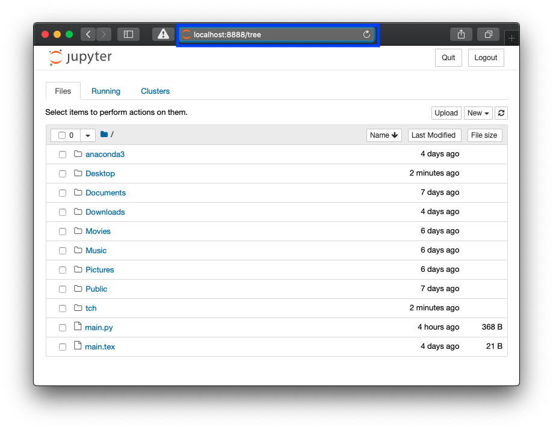
Fig. 18 The Jupyter interface.#
Creating a new notebook#
Note
If you are using Google Colab you can skip this section and continue from Writing some basic Python code.
In the top right, click on the New button Creating a new notebook. and click on Notebook.
This will be followed by a prompt to choose the programming language to
use, this is referred to as the kernel: select Python 3. Change the name
of the notebook by clicking on “Untitled” and changing the name. You
will call it “introduction” as shown in Changing the notebook name..
{kind=link}
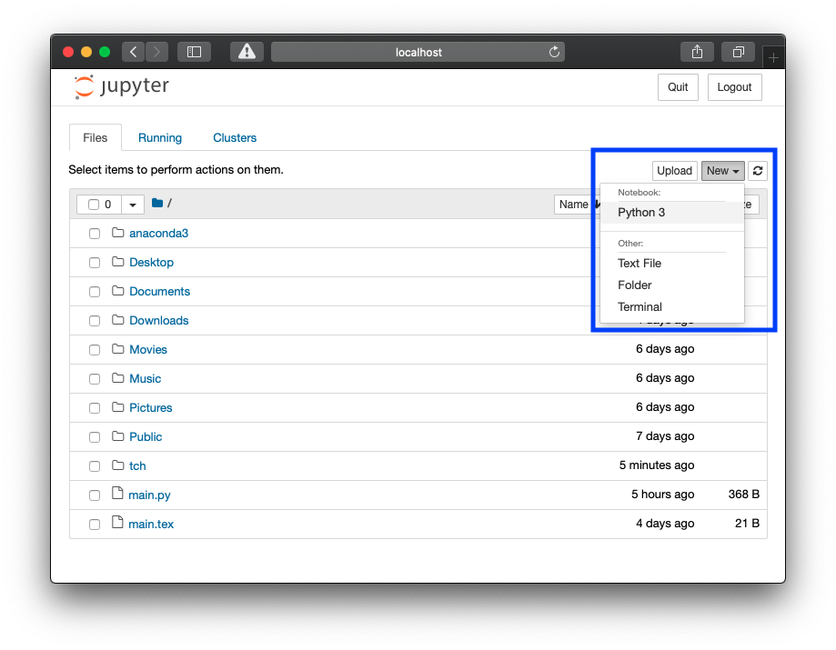
Fig. 19 Creating a new notebook.#
Let us change the name of the notebook by clicking on “Untitled” and changing the name. We will call it “introduction”.
{kind=link}
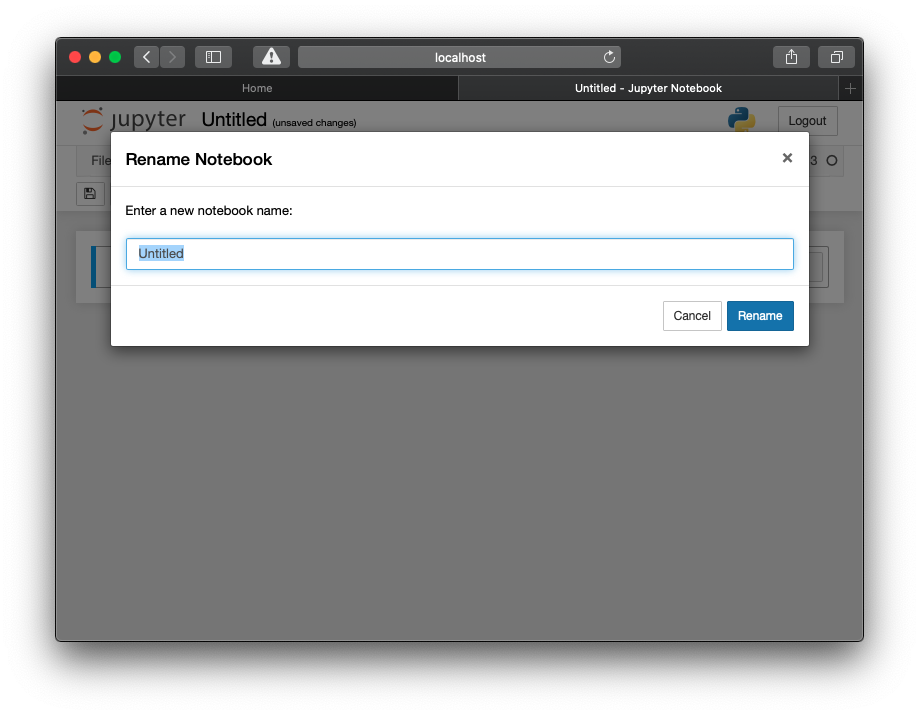
Fig. 20 Changing the notebook name.#
Organising our files#
Note
If you are using Google Colab your notebook is already saved to Google Drive. You can organise it there using the Google Drive interface. Skip ahead to Writing some basic Python code.
Open your file browser:
File Explorer on Windows (see Creating a new directory on Windows).
Finder on MacOS (see Creating a new directory on MacOS).
Navigate to where your notebook is (this might not be immediately
evident): you should see a introduction.ipynb file. Find a location on
your computer where you want to keep the files for this book, using your
file browser:
Create a new directory called
pfm(short for “Python for Mathematics”);Inside that directory create a new directory called
nbs(short for “Notebooks”);Move the
introduction.ipynbfile to thisnbsdirectory.

Fig. 21 Creating a new directory on MacOS#
{kind=link}
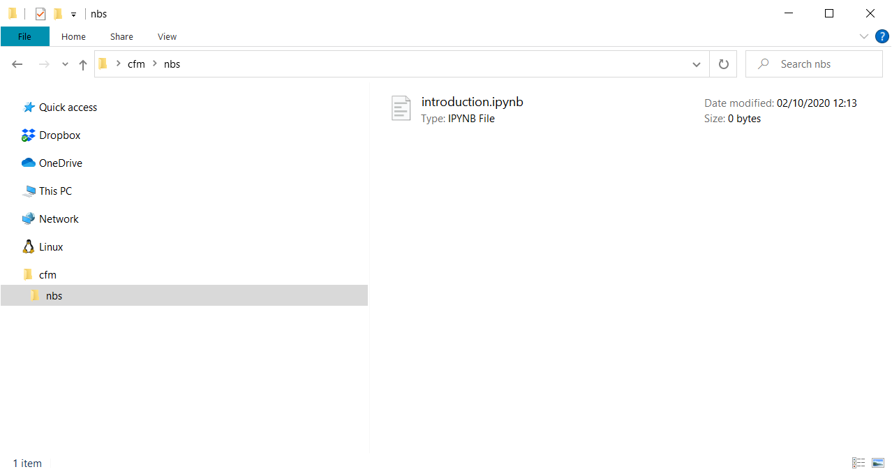
Fig. 22 Creating a new directory on Windows#
Writing some basic Python code#
Go back to the Jupyter notebook server (in your browser). Use the
interface to navigate to the pfm directory and inside that the nbs
directory and open the introduction.ipynb notebook.
{kind=link}
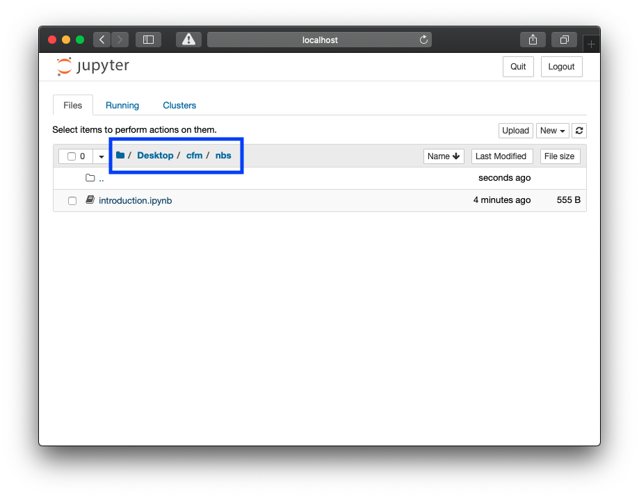
Fig. 23 Opening a notebook#
In the first available “cell” write the following calculation:
2 + 2
When you have done that click on the Run button shown in
Running code. You can also use Shift + Enter as a
keyboard shortcut.
{kind=link}
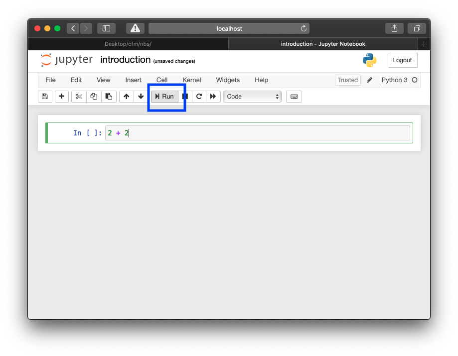
Fig. 24 Running code#
2 + 2
4
Figure Running code shows two different things:
The input: which is the instruction to Python to use the mathematical technique of addition to compute 2 + 2.
The output: showing the output that Python has returned as a result of the instruction.
Writing markdown#
One of the reasons for using Jupyter notebooks is that it allows a user
to include both code and communication using something called
markdown. Create a new cell and change the cell type to Markdown.
Now write the following in there:
As well as using Python in Jupyter notebooks we can also write using Markdown.
This allows us to use basic $\LaTeX$ as a way to display mathematics.
For example:
1. $\frac{2}{3}$
2. $\sum_{i=0}^n i$
When you run that it should look like Rendering markdown.
{kind=link}
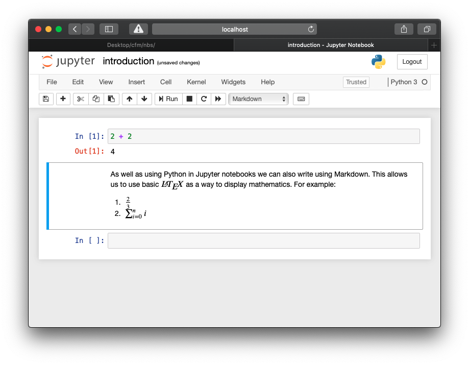
Fig. 25 Rendering markdown#
Saving your notebook to a different format#
Click on File and Download As this brings up a number of formats
that Jupyter notebooks can be exported to. Some of these might need
other tools installed on your computer but a portable option is HTML.
Click on HTML (.html). Now use your file browser and open the
downloaded file. This will open in your browser a static version of the
file you have been working on. This is a helpful way to share your work
with someone who might not have Jupyter (or even Python).
Important
This tutorial has:
Installed Python and the required libraries (or set up Google Colab).
Started a notebook server (or created a notebook in Google Colab).
Created a new notebook.
Run some Python code.
Written some markdown.
Saved the notebook to a different format.